What does "raw" mean?
Uncooked; unprocessed, unrefined.
In a natural state; not yet processed or worked.
From the Oxford English Dictionary Online
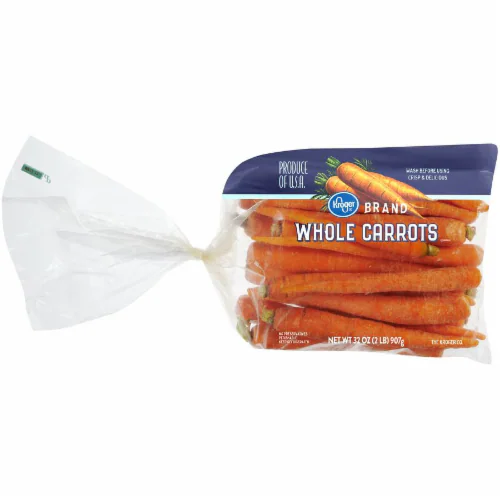
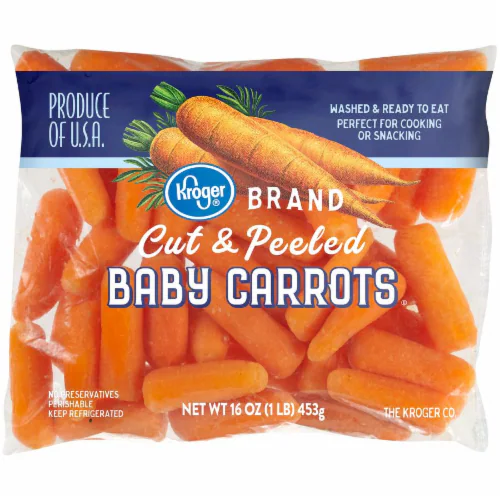
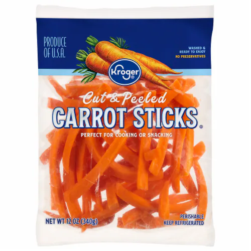

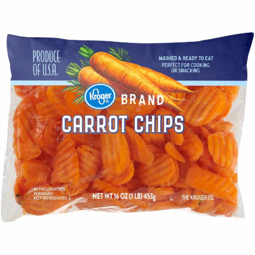
"Secondary" data
"Tertiary" data
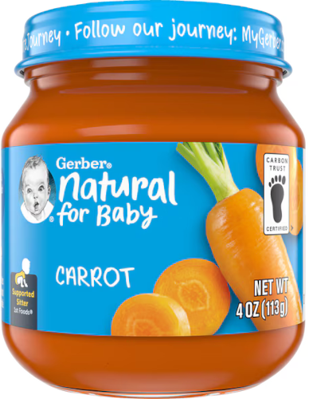
"Primary" data
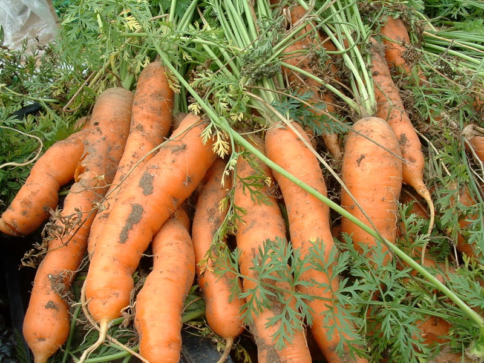
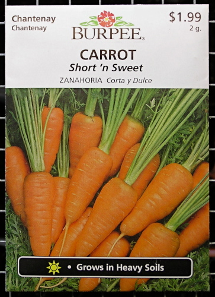
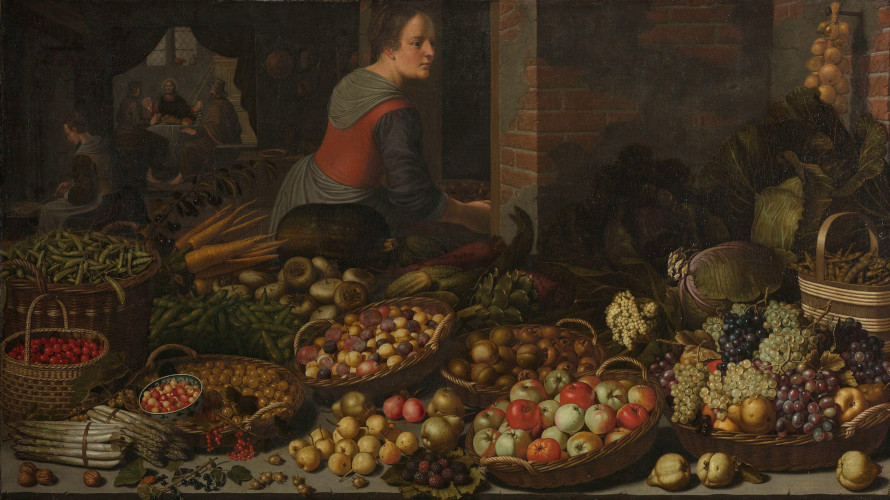
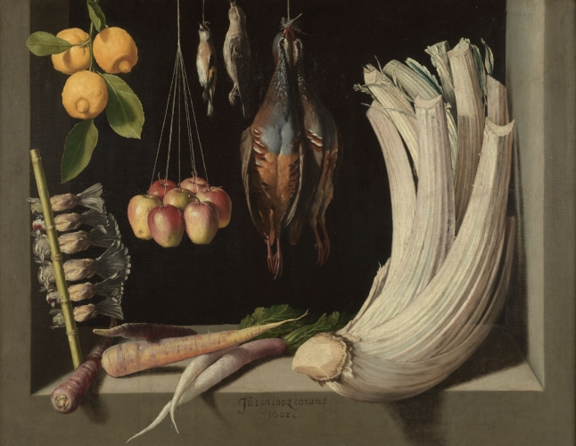
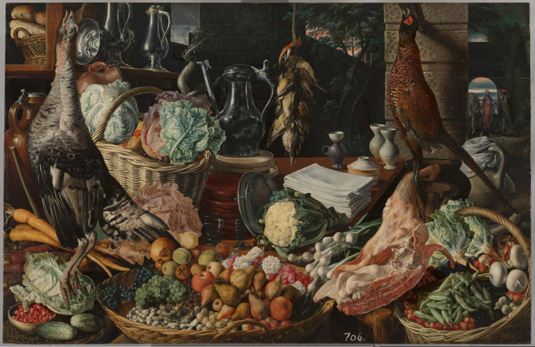
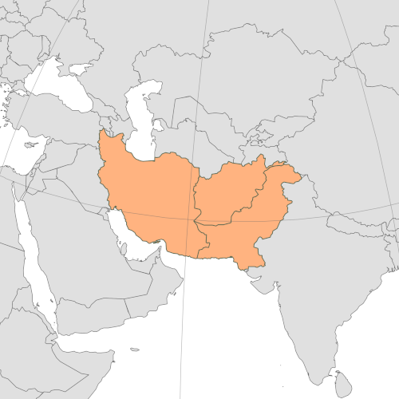
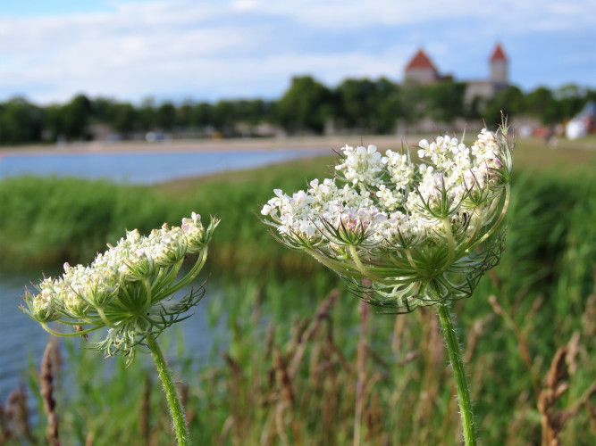
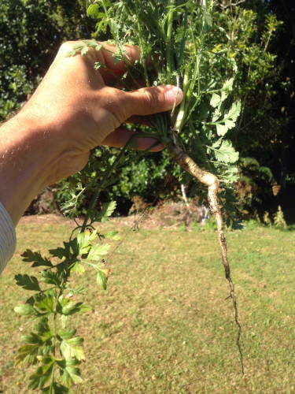
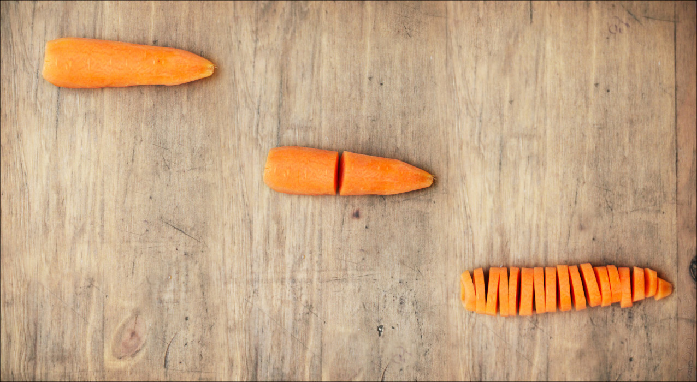
Image credits
- "Secondary" carrot images are from Kroger.com
- Baby food from Gerber.com
- "Carrots harvested" by Nick Saltmarsh, CC BY
- "carrot seeds" by normanack, CC BY
- "Porkkana | Wild carrot (Daucus carota)" by Henna K., CC BY-NC
- "2016-01-14 at 08-58-23" by Jon Sullivan, CC BY-NC
- A Dutch Yacht and a Dutch warship, 2nd rate, by Gerard Valk, c. 1675, at the National Maritime Museum, CC BY-NC-ND
- Still Life with Fruit and Vegetables, with Christ at Emmaus in the Background by Floris Gerritsz van Schooten, c. 1630, at the Rijksmuseum
- Still Life with Game, Vegetables and Fruit by Juan Sánchez Cotán, 1602, at the Museo del Prado
- Kitchen Scene with Christ at Emmaus by Joachim Beuckelaer, c. 1560-1565, at Mauritshuis in The Hauge
- De materia medica by Dioscorides Pedanius of Anazarbos, at the National Library of Naples
- "Carotte tranchée" by Olivier Lemoine, CC BY-SA
{kind=link}